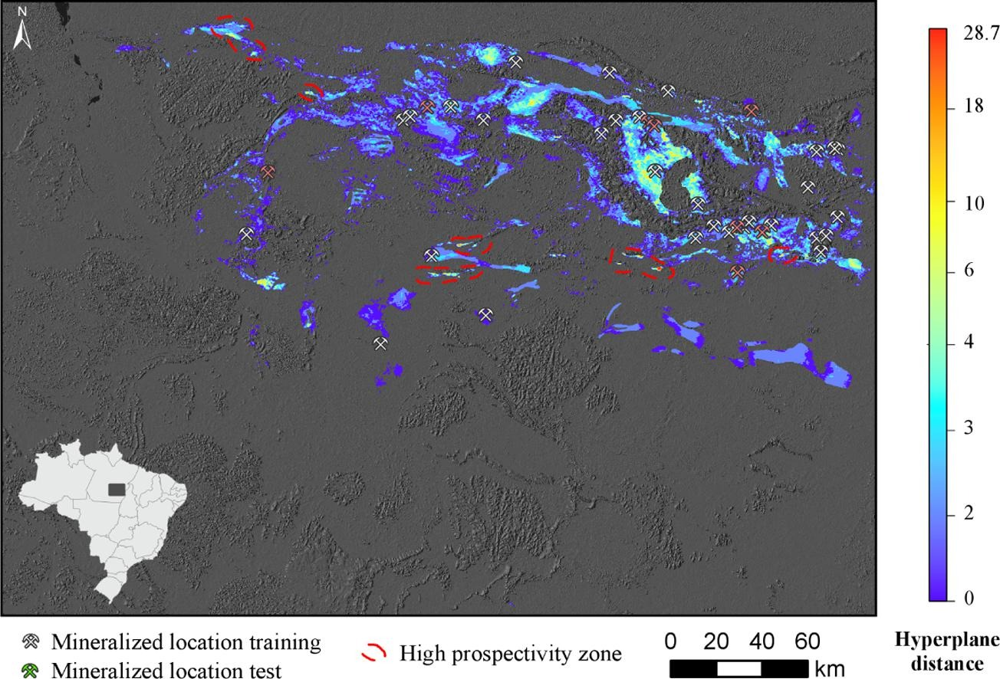

Modeling of Cu-Au prospectivity in the Carajás mineral province (Brazil) through machine learning: Dealing with imbalanced training data

Resumo em Português
O aprendizado de máquina (ML) está se tornando uma ferramenta atrativa em diversas áreas das Ciências da Terra, especialmente no mapeamento de prospectividade mineral (MPM) para apoiar a exploração mineral. Os algoritmos de ML são projetados para assumir uma quantidade relativamente balanceada de dados de treinamento para a estimativa dos limites de decisão entre as classes de interesse (mineralizadas e não mineralizadas). No entanto, no MPM os números de localizações mineralizadas e não mineralizadas são naturalmente desbalanceados, uma vez que o número de ocorrências de depósitos minerais conhecidos é naturalmente muito menor do que o número de localizações não mineralizadas.Neste estudo, utilizando máquina de vetores de suporte (SVM) para modelagem de prospectividade Cu-Au na Província Mineral de Carajás (Brasil), avaliamos os efeitos da Técnica de Superamostragem Sintética da Minoria (SMOTE) no desempenho do MPM. Os dados de treinamento originais para a classe positiva (minoritária) foram modificados por superamostragem das localizações mineralizadas usando SMOTE e por subamostragem aleatória das localizações não mineralizadas em diferentes proporções, produzindo 400 conjuntos de treinamento com proporções de amostras mineralizadas para não mineralizadas variando de 600:30 a 30:600.Os resultados mostram que o SMOTE pode aumentar significativamente o desempenho e a eficiência espacial do MPM. Melhor desempenho é alcançado usando SMOTE quando os modelos de prospectividade são treinados com número igual de amostras mineralizadas e não mineralizadas. O melhor modelo de prospectividade treinado com conjunto de dados modificado na proporção 600:600 resultou em 100% de classificação das localizações mineralizadas de treinamento e quase 80% das localizações mineralizadas de teste, delineando apenas 7% da área de estudo como prospectiva.